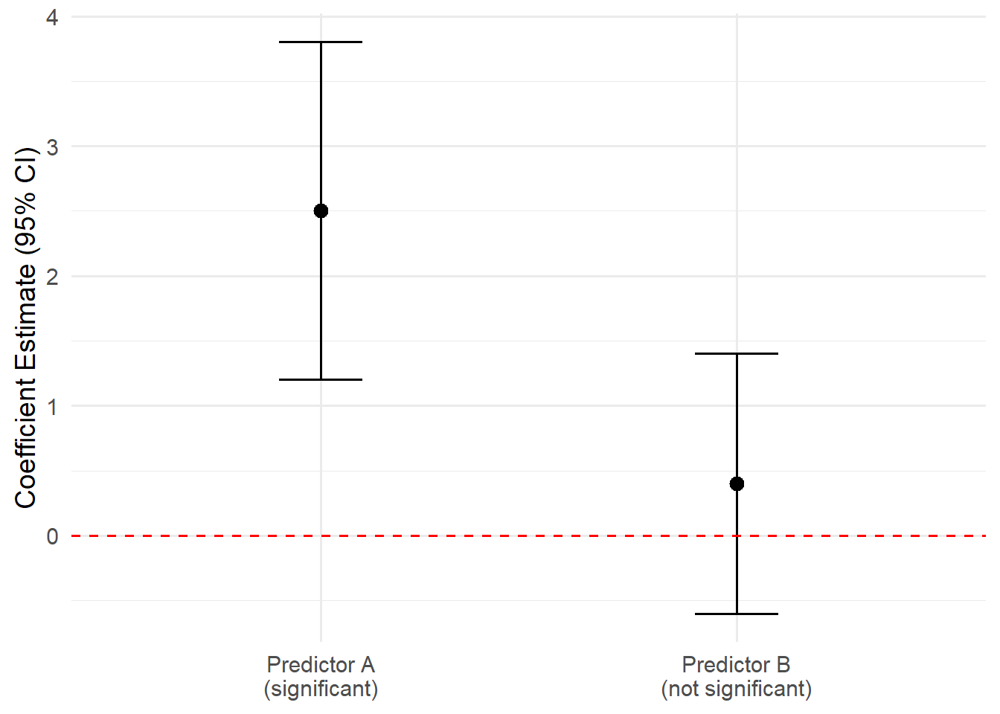

Chapter 1 HHS Statistical Thinking
Statistical Thinking and Quantitative Analysis
Goals of Quantitative HHS Research
Most quantitative HHS research seeks to:
- Describe populations and samples - descriptive purpose
- Compare groups - understand differences, evaluate programs/interventions
- Examine relationships among variables - how variables associate
- Evaluate models with multiple predictors - what factors are most important in predicting outcomes
Researchers typically draw conclusions using statistical tests that assess:
- Group differences
- Correlations
- Statistical significance
What Is Statistical Significance?
Statistical significance addresses a simple question:
Is the observed effect large enough that it is unlikely to be zero in the population?
Examples:
- Are males and females different in IQ?
- Is father involvement related to girls’ self-esteem?
- Is the observed correlation different from zero? Is the difference so big, it is unlikely to be zero
Null Hypothesis Testing
The null hypothesis states that no effect exists
Examples:
- No difference between groups
- Correlation equals zero
- Treatment effect equals zero
Statistical testing attempts to determine whether there is sufficient evidence to reject the null hypothesis. So in your thesis/dissertation, you are hoping for p <.05 so you can “reject the null”
Type I Error
A Type I error occurs when:
- We reject the null hypothesis when null hypothesis is actually true
This is a false positive. We claim based on the data we collected from a sample, that an effect exists
High intensity interval training improves cardiovascular performance better than…
Spanking/physical punishment is associated with increased aggressive behaviors in children…
Smoking is related to stress…
But in the population those effects/differences don’t exist/aren’t true
The probability of committing a Type I error is determined by α (alpha), typically:
- .05
- .01
- .001
Type II Error
A Type II error occurs when:
- We fail to reject the null hypothesis when a real effect actually exists
- Researcher concludes that UNCG women soccer players not more likely to experience ACL tears compared to male soccer players but in reality that is true in the population…
- Children in classrooms with smaller teacher-to-student ratio do not have higher reading scores…
- Frequency of smoking is not associated with lung cancer…
Common causes include:
- Small sample sizes
- Low statistical power

Problems with NHST
Critics argue that:
- Virtually all null hypotheses are false and illogical anyway
- p-values are often misinterpreted; not 95 chance the hypothesis is true
- Statistical significance says little about practical importance
- Lower p-values do not imply stronger effects
NoteBan on p-values?
- Statistical associations offer severe critiques
- Some journals attempted to ban p-values!
- ASA Statement on p-values
- Psych journal bans p-values (Nature, optional reading)
Researchers increasingly advocate reporting:
- Effect sizes
- Confidence intervals
- Bayesian analyses - what is this?
Statistical versus Practical Significance
A statistically significant effect may be trivial in practice
Large samples can make tiny effects statistically significant
- Do I want to encourage schools to target suicide prevention to Southeast Asian students based on 8.5% self-reported suicidal thoughts among that group compared to 8.9% in other ethnic groups?
Therefore researchers should report:
- Effect sizes - how big is the difference or association in standardized units
- Confidence intervals - how precise or broad is the difference or association (does it come close to zero)
- Practical implications - What would happen realistically if we advised policy decisions based on your results?
Quick Review of some other terms/ideas/stats
Confidence Intervals
- Confidence intervals estimate a plausible range of values for a population parameter
- A parameter is a population value; a statistic is what we calculate from a sample to estimate that parameter, a better term is parameter estimate… The value we come up with that we think exists in some population
- Typically we estimate something like a regression coefficient and want to assess whether that coefficient differs from zero
- If we put a confidence interval around that coefficient and the interval does not include zero, that indicates statistical significance (using a p < .05 threshold)
- If the interval does include zero, we cannot rule out that the true population value is zero — not statistically significant
TipRule of Thumb
A 95% confidence interval that excludes zero typically indicates statistical significance at the p < .05 level.
What a 95% CI actually means if that we somehow could do the same process of sampling participants MANY MANY times and computed a CI each time, 95% of those intervals would include the “True Population Value”
So the CI gives us a plausible range of values and tells us about the precision of our estimate as well
Visualizing Confidence Intervals
Standardized (Z) Scores
Z scores place observations on a common scale
Formula:
\[z=\frac{X-\bar X}{SD}\]
Interpretation:
- Positive z = above the mean
- Negative z = below the mean
Example:
A score of 78 may be above average in one class but below average in another
Z scores place both scores in context
We generally aren’t going to care about standardized scores like this. But what this point conveys is that a standardized score is a score that is relative to standard deviation.
So later when we say things like: A one unit increase in years in the foster care system is associated with a 2.5 points increase in attachment insecurity and one unit increase in number of therapy sessions completed is associated with a .75 points decrease in attachment insecurity and we want to draw a conclusion about which effect is stronger, we can rely on standardized coefficients.
Just like we want to understand how a 78 point test score assesses performance in Class A versus a 78 in Class B (if the class averaged and standard deviations are different) - here we might want to understand if years in foster care or number of therapy sessions has a stronger “effect” on attachment.
The raw or unstandardized coefficients can’t tell us that because years in foster care might have a mean of 2 with a SD of .8 and number of therapy sessions might have a mean of 45 with a SD of 20.
So a “one unit increase” in each of these is a bigger increase in one versus the other.
If we converted these regression coefficients to standardized coefficients we might see that the “effect” of years in foster care is .25 and for number of therapy sessions is -.40 meaning therapy has a “stronger” effect.
Note that (see box below) that converting an unstandardized coefficient to standardized just involves multiplying the unstandardized coefficient by that X or IVs standard deviation over the Y or outcome variable standard deviation. So in our example, we would take the coefficient linking foster care years 2.5 and multiply by .8/1.2 - assuming that 1.2 is the SD for attachment insecurity.
NOTE THAT THIS is only a conceptual point! You never have to actually compute these, programs do it for you…
NoteConverting multiple regression coefficients to standardized form
For predictor \(X_j\) in a multiple regression model,
\[Y = b_0 + b_1X_1 + b_2X_2 + \cdots + b_pX_p + \varepsilon\]
the standardized coefficient is:
\[\beta_j = b_j\left(\frac{s_{X_j}}{s_Y}\right)\]
Where:
- \(b_j\): unstandardized slope for predictor \(X_j\)
- \(\beta_j\): standardized slope (beta weight) for predictor \(X_j\)
- \(s_{X_j}\): sample standard deviation of predictor \(X_j\)
- \(s_Y\): sample standard deviation of outcome \(Y\)
- \(j = 1,\dots,p\): index of predictors in the model
An equivalent vector form is:
\[\boldsymbol{\beta} = \frac{1}{s_Y}\mathbf{D}_X\mathbf{b}\]
where \(\mathbf{D}_X = \mathrm{diag}(s_{X_1},\dots,s_{X_p})\), \(\mathbf{b}=[b_1,\dots,b_p]^\top\), and \(\boldsymbol{\beta}=[\beta_1,\dots,\beta_p]^\top\).
APA notation
- Use \(b\) for unstandardized sample regression coefficients.
- Use \(\beta\) (Greek beta) for standardized sample regression coefficients.
- Intercept is typically written as \(b_0\).
So in APA-style reporting, the visual distinction is:
- Roman \(b\) = unstandardized coefficient
- Greek \(\beta\) = standardized coefficient